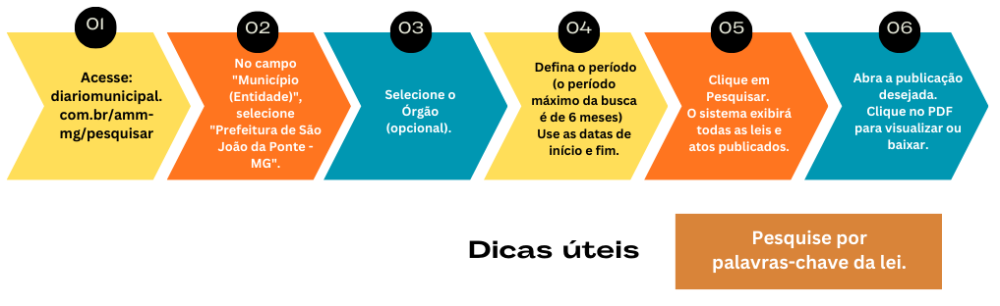

Prefeitura Municipal de
SÃO JOÃO DA PONTE - MG


ATOS NORMATIVOS
O Município de São João da Ponte-MG objetivando colocar ao alcance de todos a Legislação Municipal, disponibiliza na INTERNET, de forma fácil e ágil, através do Diário Oficial dos Municípios, as Leis, os Decretos, as Portarias e Resoluções, cuja consulta consiste nas opções: selecionar a Entidade, o Orgão e definir um período específico para localizar os atos publicados.
Portal da AMMFluxograma para localizar os Atos Normativos

LEIS
- Lei Orgânica Municipal Baixar
- Estatuto do Servidor Público Baixar
- Lei Orçamentaria Anual - LOA 2025 Baixar
- Lei Orçamentaria Anual - LOA 2026 Baixar
- Lei 2.001-2013 - CODANORTE Baixar
- Lei 2.034-2014 - CIMANS Baixar
- Lei 2.180-2020 - Alteração do protocolo de intenções do Consórcio Intermunicipal Multifinalitário da Área Mineira da Sudene - CIMANS Baixar
- Lei 2.287-2024 - Criação do Serviço de Inspeção Municipal – (S.I.M) Baixar
- Lei 2.325-2025 - LDO 2026 Baixar
- Lei 2.300-2024 - Estima receita e fixa despesa Baixar
- Lei 2.302-2024 - Altera Plano Plurianual Baixar
- Lei Cisnorte - Projeto de lei 09 de 2008 Baixar
- Lei que Autoriza Consórcios Públicos Baixar
- Lei 2.353-2025 - Lei que cria o Arquivo Público Municipal de São João da Ponte e dá outras providências. Baixar
- Lei 2.354-2025 - Lei que cria normas do PATRIMÔNIO CULTURAL de São João da Ponte-MG. Baixar